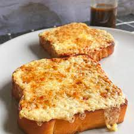

This recipie will take approximately 5-10 minutes of your time.
- Grated cheese of your choice.
- Two slices of bread
- Worchestershire Sauce
- (Optional: Onions)
- Oven
- Sharp knife
- Bandages
- Preheat your oven on the grill setting to a medium to high heat
- Place two slices of bread on the grill and cook until golden brown
- Flip over and add cheese (And onions) with a splash of Worchestershire Sauce
- Cook until the cheese is bubbling and golden.
Back